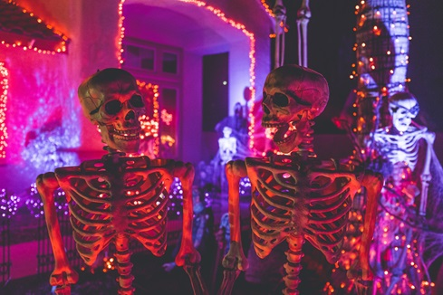

I'm from India, and my name is Yash Patel. I am majoring in Computer Information Systems and currently reside in the Buffalo Forest Ave area. I have a strong interest in technology and its uses, and I'm keen to learn more about it in order to investigate different career options.
Although I don't play any sports at Buffalo State, I'm really interested in cricket and like to play it in my spare time. Back in India, cricket has always played an important role in my life and is still a beloved pastime. I currently work at Bengal Kitchen in addition to my academic endeavors, which enables me to manage work and studies while obtaining useful practical experience
